10 部片单 · 恐怖 / 科幻 / 惊悚 / 悬疑 / 剧情
| # | 片名 | 类型 | 评分 / 状态 |
|---|---|---|---|
| 01 | 不可饶恕 | 剧情 / 西部（美国 · 怀俄明小镇，两个老人与一个警长的最后账） | 8.5 / 96% / 85 |
| 02 | 怒火救援 | 动作 / 惊悚 / 剧情（墨西哥城 · 一个退役特工与一个九岁女孩） | 8.1 / 39% / 47 |
| 03 | 亲切的金子 | 惊悚 / 剧情 / 悬疑（韩国 · 一个模范囚犯的十三年布局） | 7.6 / 76% / 75 |
| 04 | 生死狙击 | 动作 / 惊悚 / 剧情（美国 · 一个被自己效忠的体制出卖的神枪手） | 7.8 / 47% / 53 |
| 05 | 飓风营救 | 动作 / 惊悚（法国 / 美国 · 一个父亲有九十六小时） | 8.3 / 60% / 51 |
| 06 | 殉难者 | 恐怖 / 惊悚（法国 · 关于「殉道者」的一场实验） | 6.8 / 63% / 7.0 |
| 07 | 守法公民 | 惊悚 / 犯罪 / 剧情（美国 · 一个受害者家属的十年布局） | 8.0 / 26% / 34 |
| 08 | 看见恶魔 | 惊悚 / 犯罪（韩国 · 一场没有终点的猫鼠游戏） | 7.9 / 83% / 67 |
| 09 | 天注定 | 剧情 / 犯罪（中国 · 四个被逼到用暴力说话的人） | 8.3 / 95% / 77 |
| 10 | 裁缝 | 剧情 / 黑色喜剧（澳大利亚 · 一个女裁缝与整座小镇的审判） | 7.9 / 57% / 47 |
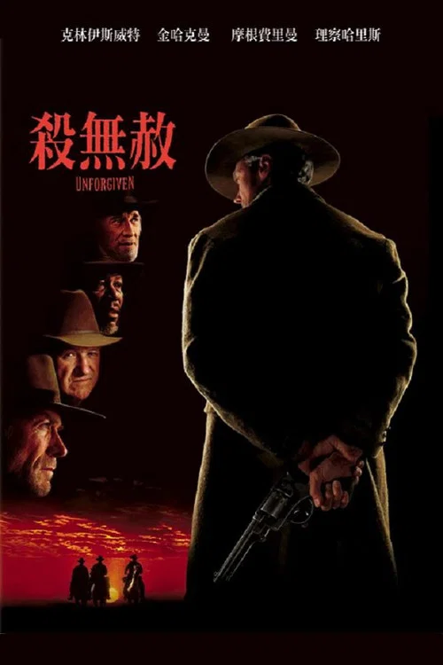
不可饶恕 Unforgiven
「“应得不应得，跟这没关系。”」
剧情梗概
怀俄明的一座小镇。一个妓女被牛仔毁了容，赏金凑不齐，只有一个寡妇愿意站出来筹这笔钱。退役枪手威廉·芒尼——传说早就死了——为了两个孩子能吃饱，接下这单活；老友内德·洛根看不下去，陪他走完最后一程。而镇上的警长小比尔·达格特立下了最严的规矩：谁带枪进城，就打死谁，他手底下已经死过两个人。一边是攒钱赎罪的母亲，一边是拿命守规矩的警长，中间是三个决定再干一票的老人——三条线最后都收拢到镇口那间酒馆。
亮点
- 克林特·伊斯特伍德导演、主演，第 65 届奥斯卡一举拿下最佳影片、最佳导演、最佳男配角、最佳剪辑四项大奖（九项提名）。
- 成本约 1440 万美元，全球约 1.59 亿美元——口碑票房双收，直接点燃了九十年代的西部片复兴。
- 吉恩·哈克曼凭小比尔·达格特拿到第二座奥斯卡小金人（最佳男配角，上一座是《法国贩毒网》）。
- 剧本由大卫·韦伯·皮普尔斯写于 1976 年，伊斯特伍德放了十几年才开拍——他等自己老到能亲自演出「过气枪手」的那一天。
- 结尾酒馆前小比尔那句「应得不应得，跟这没关系」被影迷引用了三十年——它替整个西部片类型写下了墓志铭。
- 全片对「枪手传奇」的态度是拆台：没有潇洒对决，只有老人、病马、泥地和冷雨——英雄在这里是退休的，不是登场的。
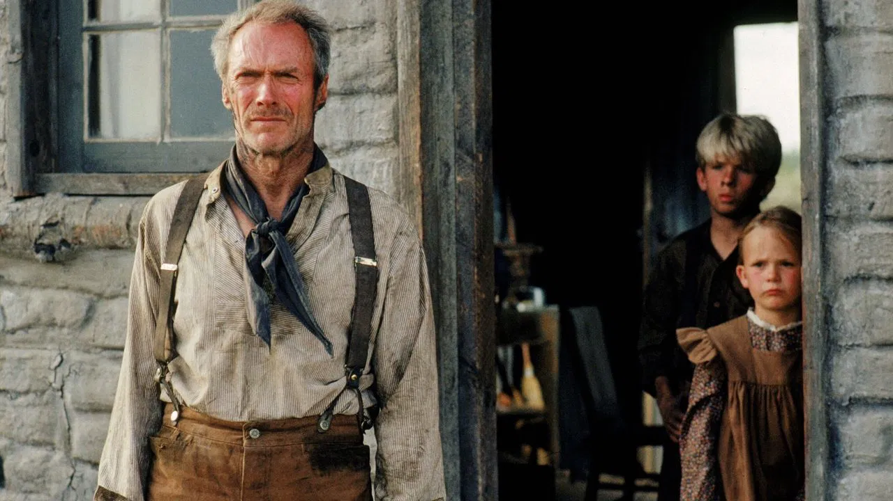
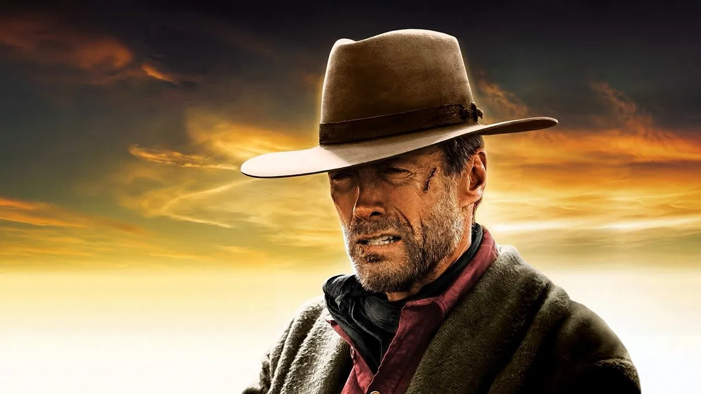
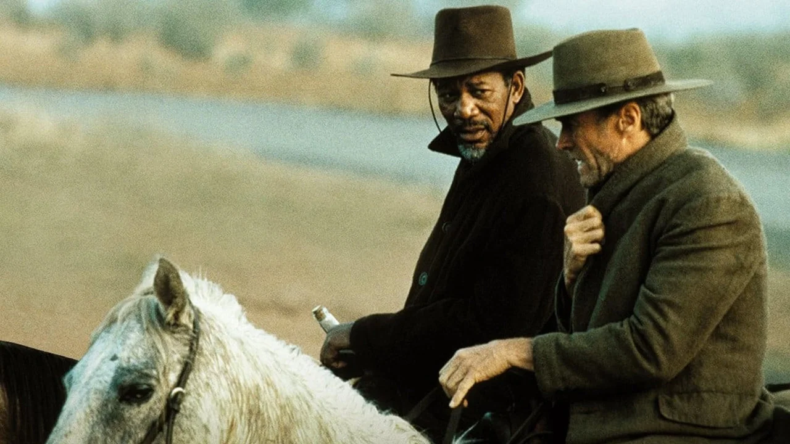
导演与主创 · 他们的历史作品

 老爷车
老爷车 百万美元宝贝
百万美元宝贝 黄金三镖客
黄金三镖客 骡子
骡子
 天才一族
天才一族 法国贩毒网
法国贩毒网 国家公敌
国家公敌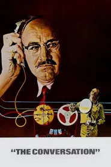
窃听大阴谋
 七宗罪
七宗罪 肖申克的救赎
肖申克的救赎 超体
超体 遗落战境
遗落战境短评（轻微剧透）
轻微剧透：全片最狠的一场戏不是结尾的屠杀，是内德之死——他只想看朋友最后一眼，却被抓住剥了皮，消息传回芒尼耳朵里的时候，观众就知道酒馆里会死多少人。轻微剧透：伊斯特伍德最冷的一笔，是让芒尼从头到尾没「觉醒」过：他杀人前会吐、会手抖、要先灌两口酒——他不是变回英雄，是他本来就没退路。结尾他杀光酒馆里的人，让全镇人把内德埋好，然后走进雨里——这一幕之后，西部片的主角再也威风不起来了。
为什么值得一看
想看「西部片能被拍得多不像西部片」的人；能接受节奏慢、对白少、暴力突然而干脆的观众。R 级，建议成年观看。内地未映，流媒体与蓝光可看。看完想继续：《百万美元宝贝》（同导演，他的另一座奥斯卡）、《八恶人》（往期第 45 期推荐过的雪原版复仇）。
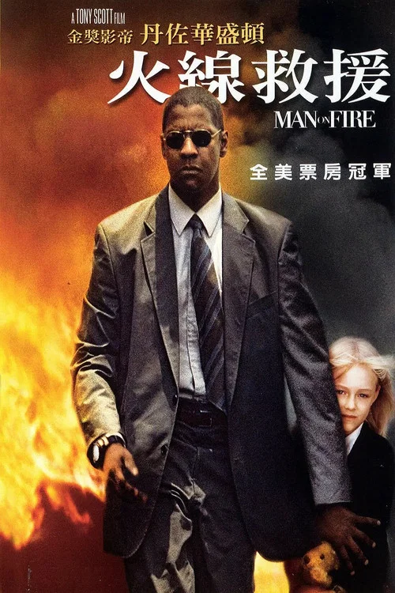
怒火救援 Man on Fire
「“我保护不了所有人，但我能还你一个公道。”」
剧情梗概
墨西哥城。前中情局特工约翰·克雷西早就活得像个空壳，酒瓶和枪是他仅剩的两样东西。工业家拉莫斯家把九岁的女儿皮塔交给他保护——女孩用一盒蜡笔和一句「我爱你」把这个酒鬼重新拼成了人。然后皮塔被绑走了。绑匪要的只是赎金，而克雷西要的是把整条链上的每一个人都翻出来：警察、内鬼、律师、大哥。他给皮塔做过的事，现在要一样一样还回去。
亮点
- 托尼·斯科特导演，改编自 A·J·奎内尔 1980 年的同名小说（1987 年斯科特·格伦版《怒火救援》是它的第一次银幕化）。
- 成本约 7000 万美元，全球约 1.3 亿美元——一部被影评人踩到底、却被观众顶上天的电影：烂番茄 39%，豆瓣 8.1。
- 本片是斯科特与丹泽尔·华盛顿四次合作里最著名的一次（前有《红潮风暴》，后有《时空线索》《危情时速》）。
- 达科塔·范宁拍本片时年仅九岁——她和华盛顿的每一场戏都像父女而不是演员对戏，这是全片成立的地基。
- 影像上是斯科特美学的集大成：过饱和的色调、躁动的快剪、颗粒感与手持晃动——他把「绝望」直接调进了画面里。
- 结尾那段交叉剪辑（克雷西倒在后座、皮塔的旁白、圣歌响起）被无数后来的动作片模仿，很少有人追得上。
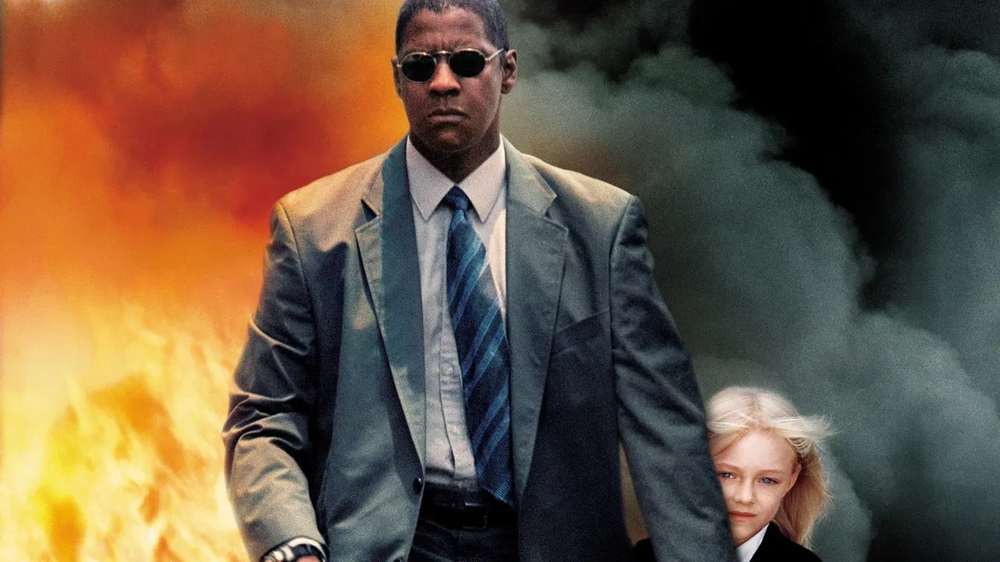
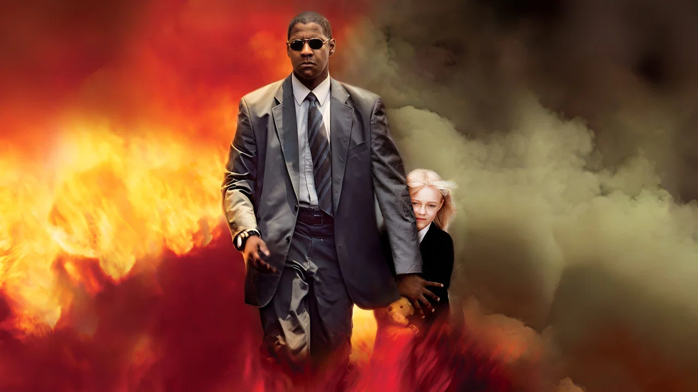
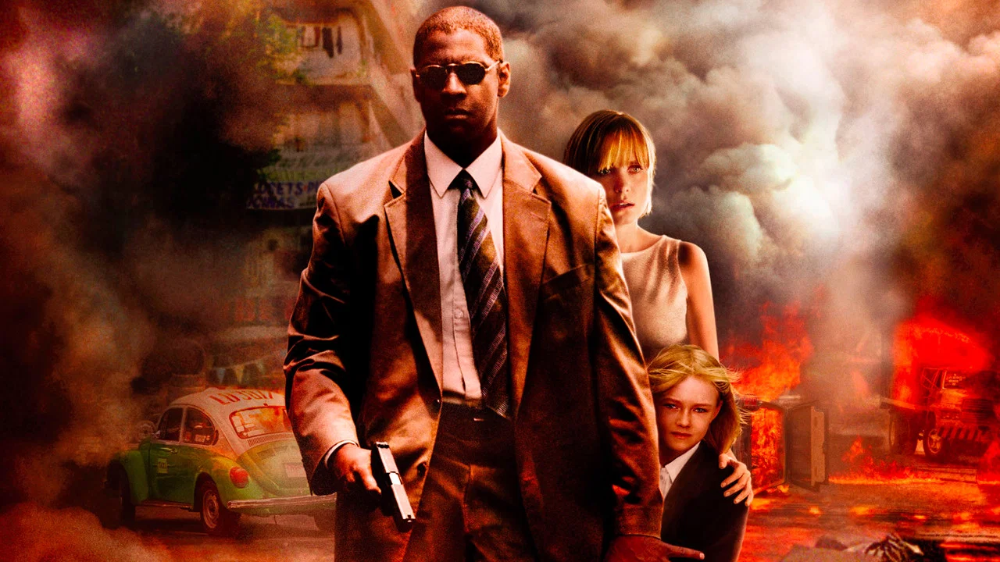
导演与主创 · 他们的历史作品

 壮志凌云
壮志凌云 时空线索国家公敌
时空线索国家公敌
 伸冤人
伸冤人 艾利之书
艾利之书 训练日
训练日 迫降航班
迫降航班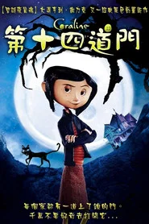
鬼妈妈 世界之战
世界之战 暮光之城2：新月
暮光之城2：新月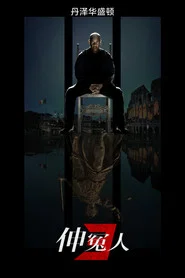
伸冤人3短评（轻微剧透）
轻微剧透：全片最疼的一场戏是克雷西在教堂里听皮塔朗读作文——一个连自己都放弃的人，第一次被一个孩子当成全世界。轻微剧透：斯科特的狠劲在于，他让克雷西的复仇全程没有快感：每一枪都像是还债，每一次爆炸都更接近死亡。结尾绑匪头目对他说「你杀了这么多人，上帝会原谅你吗」——没有回答，因为答案在皮塔的旁白里。这不是一部爽片，是一部关于「迟到的父爱」的讣告。
为什么值得一看
想看「动作片能把情感做多重」的人；能接受绑票题材压抑、暴力直接、结局并不痛快的观众。R 级，建议成年观看。内地未映，流媒体可看。看完想继续：《怒火救援》的另一版（1987）、《时空线索》（同导演同主演）、《伸冤人》（往期推荐过的另一种退役特工复仇）。
亲切的金子 Sympathy for Lady Vengeance
「“活得好好的，就是最好的复仇。”」
剧情梗概
十三年前，二十岁的李金子替「老师」背下了一桩男童绑架谋杀案，被判入狱。出狱那天，她已经成了一个完美的模范囚犯：信教、行善、做蛋糕，见谁都说谢谢。可她的目标只有一个——当年真正的凶手，白老师。金子用一整年的时间收拢线索：当年的受害者家属、一个愿意入伙的年轻人、一个从澳大利亚回来的女孩。等所有人聚齐，她把白老师绑进了一座废弃的小学——那场集体处刑，是她用十三年刑期打磨出来的作品。
亮点
- 朴赞郁「复仇三部曲」的收官之作（前两部《我要复仇》《老男孩》），本片让他拿到第 63 届威尼斯电影节金狮提名。
- 韩国本土票房约 2259 万美元——一部 R 级作者电影在当年的韩国院线是现象级数字。
- 李英爱凭本片完成从「《大长今》国民女星」到「暗黑女主角」的彻底转身，是韩国演员转型最成功的案例之一。
- 全片的色调像童话，内容却是处刑：结尾那场「集体复仇」拍成了粉与黄的梦境——朴赞郁把暴力拍成了典礼。
- 金子出狱后做的每一件「好事」都是伪装：她越像个模范公民，观众越清楚她要还的债有多大。
- 崔岷植演的白老师是全片最恐怖的存在——一个把杀人当成日常杂务的人，见面先问「吃了吗」。
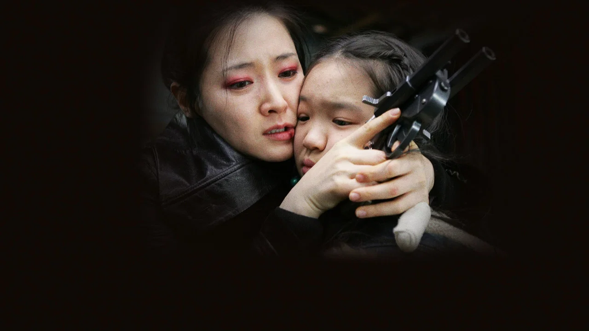
导演与主创 · 他们的历史作品

 老男孩
老男孩 小姐
小姐 斯托克
斯托克 我要复仇
我要复仇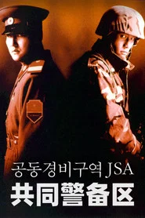
共同警备区 老男孩超体
老男孩超体 看见恶魔
看见恶魔 破墓
破墓短评（轻微剧透）
轻微剧透：全片最震撼的一场戏是受害孩子们的家长们一个个上前开枪，镜头在面孔之间移动，没有人犹豫，也没有人快意——只有一种耗尽一生的疲惫。轻微剧透：朴赞郁最狠的设计是让金子从头到尾不「清白」：她确实是杀人共犯，她的十三牢狱之灾一半是罪、一半是布局。所以当她在结尾说出「我把我的少年时代埋在了这里」，观众才意识到：这场复仇里没有赢家，只有一群被同一桩罪毁掉的人，终于把那天过完了。
为什么值得一看
想看「复仇片能把风格推到多极致」的人；能接受极端暴力、宗教意象浓重、以及它本质上是一部关于「赎罪是否可能」的电影的观众。18+，仅建议成年观看。内地未映。看完想继续：《老男孩》（往期第 36 期推荐过的三部曲第二部）、《小姐》（往期第 14 期推荐过的同导演作品）、《我要复仇》（三部曲第一部）。
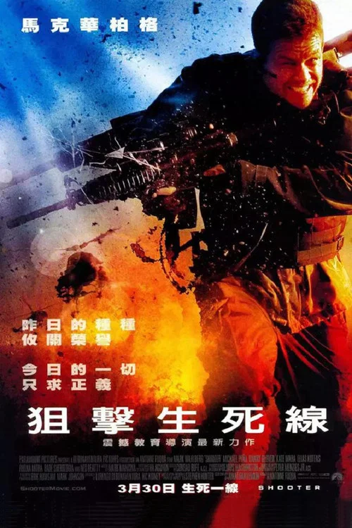
生死狙击 Shooter
「“他们造了一个完美的替罪羊，忘了羊会咬人。”」
剧情梗概
鲍勃·李·斯瓦格是美军最准的狙击手，退役后躲在深山里，只想带着狗清静过日子。一队政府特工找上门，请他出山协助保护总统——他去了，然后被出卖：狙击点被人顶替，他成了暗杀总统的通缉犯，搭档死在怀里，全世界都在通缉他。 FBI 菜鸟探员尼克·孟菲斯是唯一一个还在看证据的人。斯瓦格的办法很老派：不用系统，用他自己——一个人，一条步枪，把整条利益链上的人一个个清掉。
亮点
- 改编自普利策奖得主斯蒂芬·亨特 1993 年的小说《冲击点》，安东尼·福奎阿执导——第 48 期《训练日》的导演正是他。
- 成本约 6100 万美元，全球约 9570 万美元；烂番茄 47% 而豆瓣 7.8，又是一部影评人与观众打架的电影。
- 马克·沃尔伯格为出演接受了实弹射击与战术训练，片中的据枪、呼吸与测风动作经得起军迷逐帧看。
- 迈克尔·佩纳演的尼克·孟菲斯是全片的良心：一个在小镇上长大的 FBI 新人，唯一一个不肯把证据「看顺眼」的人。
- 本片是本期十部里唯一在内地公映过的：2007 年 4 月下旬起在上海、成都等城市先行上映（沪上首周末票房约 280 万元），北京 5 月 11 日、广州 5 月 25 日跟进——派拉蒙为它试了「不同城市不同期」的引进片新玩法。
- 片尾那场山地对决是近十年商业动作片里少有的「用脑子打」：狙击手之间的较量，比的不是枪法，是谁先算出对方的位置。
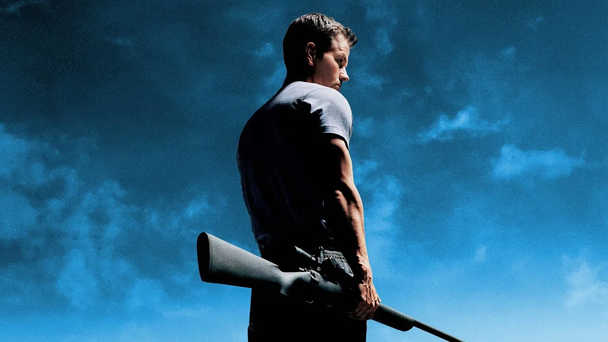
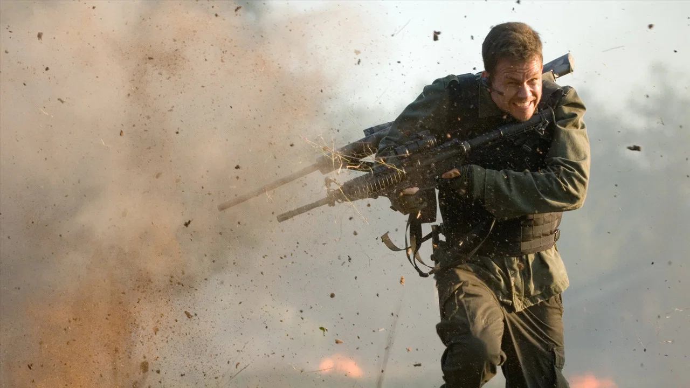
导演与主创 · 他们的历史作品
伸冤人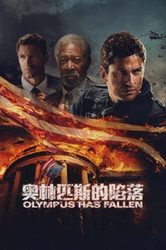
奥林匹斯的陷落训练日 豪勇七蛟龙
豪勇七蛟龙
 泰迪熊
泰迪熊 变形金刚4：绝迹重生
变形金刚4：绝迹重生 泰迪熊2
泰迪熊2 变形金刚5：最后的骑士
变形金刚5：最后的骑士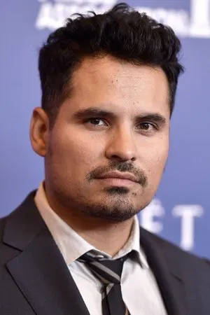
 火星救援
火星救援 狂怒
狂怒 蚁人
蚁人短评（轻微剧透）
轻微剧透：全片最凉的一场戏是斯瓦格逃回山里验伤——他给自己开枪、自己缝线，全程没有一句台词。轻微剧透：福奎阿把「体制」拍成了一个具体的东西：不是抽象的恶，是一串签了字的人。斯瓦格最后没有「洗清冤屈」，他只是把该偿命的都偿了，然后消失在国境线外——这个结局比任何法庭翻盘都更接近真实的复仇。
为什么值得一看
想看「一个专业人士被逼成独狼」的人；能接受阴谋论题材、暴力直接、以及它本质上是一部「用技术对抗权力」的电影的观众。R 级，建议成年观看。内地公映过（分批），流媒体与蓝光可看。看完想继续：《训练日》（第 48 期推荐过的同导演作品）、《生死狙击》原著小说系列、《谍影重重》（往期推荐过的同类孤勇者）。
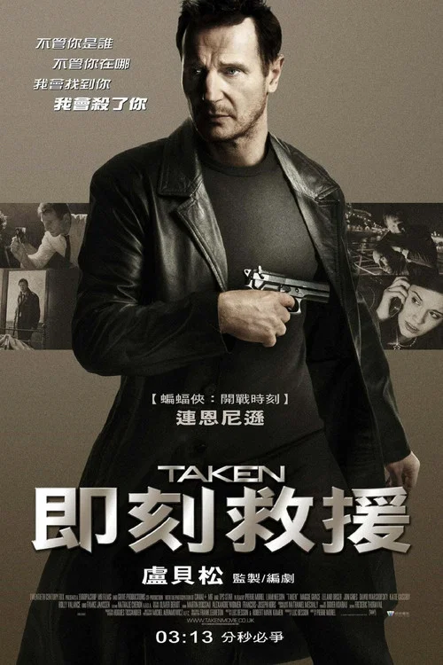
飓风营救 Taken
「“我会找到你，我会杀了你。”」
剧情梗概
布莱恩·米尔斯是退役的中情局特工，退休后只剩一件事想做：当好父亲。十七岁的女儿金要去巴黎，他紧张得像个普通老爸——而他的预感是对的：金刚落地就被贩毒集团绑走。前妻的电话、法国警方的按流程办事，全都指望不上。布莱恩飞过去，剩下的时间只有九十六小时。他没有团队、没有支援，只有一个老特工的通讯录和一台录音机——以及一个父亲被逼到极限之后，什么都干得出来的狠劲。
亮点
- 吕克·贝松编剧、制片，皮埃尔·莫瑞尔执导——一部成本仅 2500 万美元的法国动作片。
- 全球票房约 2.27 亿美元，其中北美 1.45 亿——一部欧洲配方熬出来的好莱坞级爆款。
- 一个罕见的发行案例：本片 2008 年 2 月法国首映，同年 4 月 11 日就引进内地（中影发行、上影厂译制），北美反而等到 2009 年 1 月底超级碗周末才大规模公映——中国内地观众比北美观众先看了大半年。
- 连姆·尼森拍本片时已经 55 岁——这部片把他从「文艺片演员」直接改造成了动作明星，也意外开启了他职业生涯最卖座的十年。
- 93 分钟没有一分钟浪费：从女儿被绑到机场对峙，每一场戏都在给下一个「怎么办」拆雷。
- 那句「我会找到你，我会杀了你」的电话独白，是 2008 年之后被引用最多的电影台词之一。
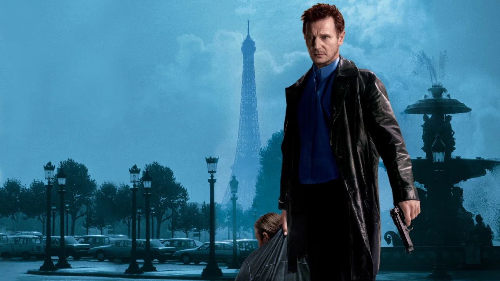
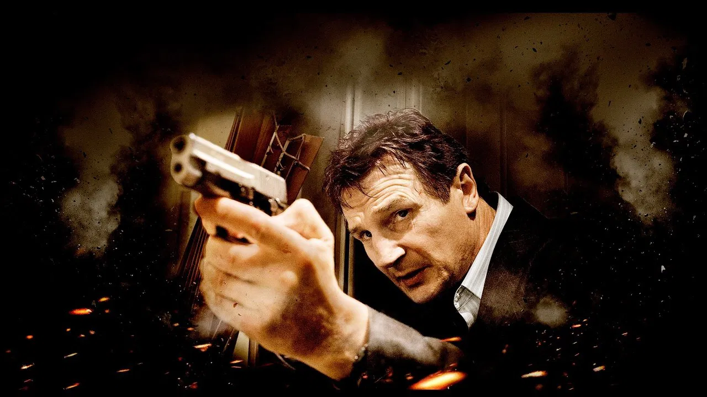
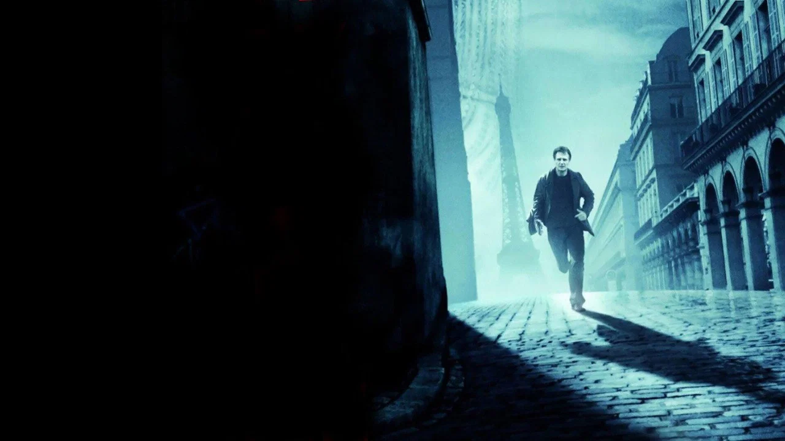
导演与主创 · 他们的历史作品
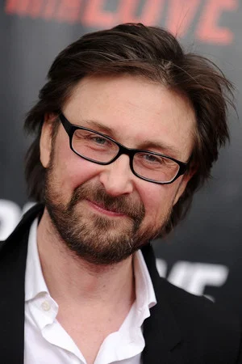
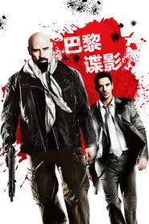
巴黎谍影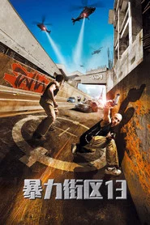
暴力街区13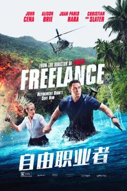
自由职业者
 辛德勒的名单
辛德勒的名单 星球大战1：幽灵的威胁
星球大战1：幽灵的威胁 蝙蝠侠：侠影之谜
蝙蝠侠：侠影之谜 飓风营救2飓风营救2
飓风营救2飓风营救2 飓风营救3
飓风营救3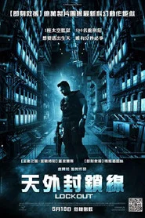
太空一号 暮光之城4：破晓（下）
暮光之城4：破晓（下）短评（轻微剧透）
轻微剧透：全片最让人窒息的不是打斗，是时间——影片里的倒计时和观众心里的倒计时是同一个。轻微剧透：莫瑞尔最聪明的一点，是让布莱恩的每一步都「有据可查」：他靠的是特工的技能库，不是主角光环。结尾在机场交易点那场混战之后，父女俩坐在车里听警笛——他救了人，却也知道有些东西补不回来了。这部片之后，「有特殊技能的父亲救女儿」成了一个类型，而它仍然是最好的一部。
为什么值得一看
想看「九十六小时能被拍得多紧」的人；能接受人口贩卖题材压抑、暴力直接、以及它本质上是一部「父亲雪耻」电影的观众。内地公映过，流媒体可看。看完想继续：《飓风营救2》《飓风营救3》（同主演，一蟹不如一蟹）、《危情时速》（本片主演的另一部高压之作）。
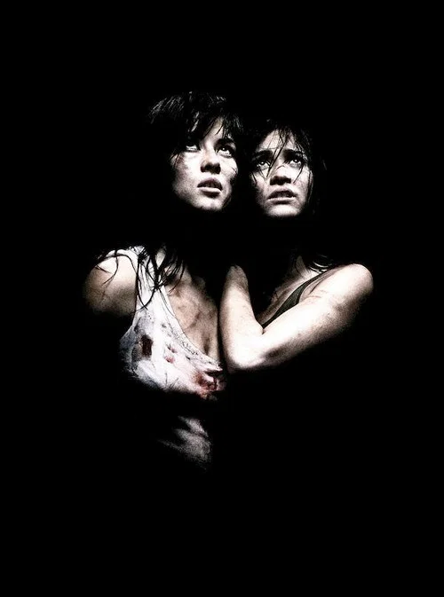
殉难者 Martyrs
「“她们想看的不是死亡——是死亡之后。”」
剧情梗概
露西从一个地下囚禁室里逃了出来，浑身是伤，说不清自己经历了什么。她被安娜所在的「家庭」收留——一个同样在童年受过创伤的女孩，两个人像两只互相舔伤口的动物。可追踪而来的人不会放过她们，安娜只能反攻进去：她原以为那是个虐待狂组织，走进地窖之后才发现，这里有一套完整的理论、一套仪式般的程序。他们要把年轻女人变成「殉道者」——通过极限的痛苦，去窥视死亡另一侧的景象。而安娜，即将成为最后一个环节。
亮点
- 帕斯卡·劳吉尔执导、编剧（前作《鬼天使》），《殉难者》是他第二部长片，也是让他争议缠身的那一部。
- 影片在多个电影节放映时出现观众退场、中途离席乃至晕倒——它把「痛苦」本身拍成了主角。
- 烂番茄 63% / IMDb 7.0 / 豆瓣 6.8：一部影评人愿意为它辩护、而大多数观众不愿再看第二遍的电影。
- 它对「痛苦=启示」的设定不是猎奇，是一个完整的意识形态：地窖里的组织像学术团体多于邪教——这是全片最让人发冷的地方。
- 莫贾娜·阿拉维与米兰妮·让帕诺米几乎全程在承受生理与心理的双重极限，两人的表演是这部片真正的骨架。
- 2015 年好莱坞翻拍版《殉难者》口碑崩塌，反向证明了原版的「不可复制」。
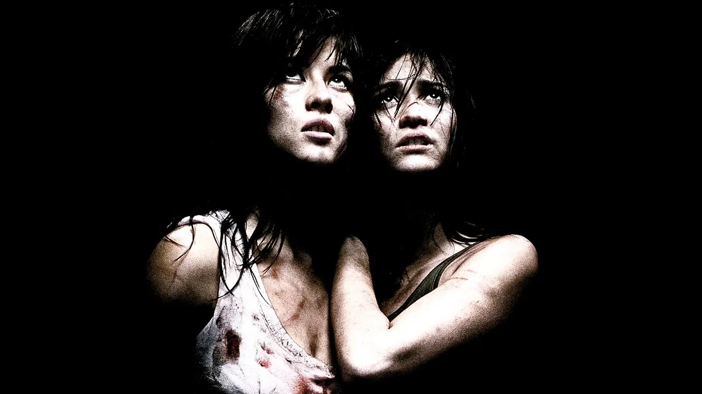
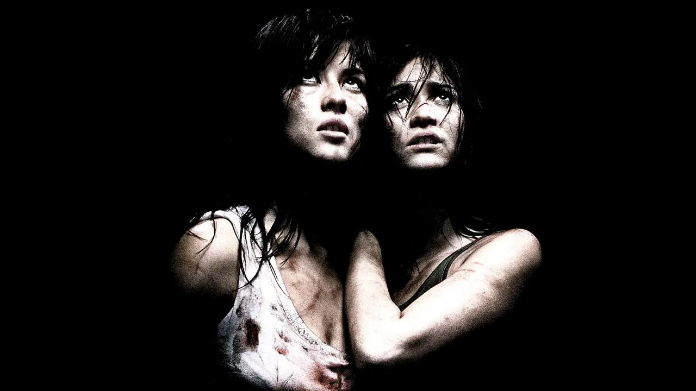
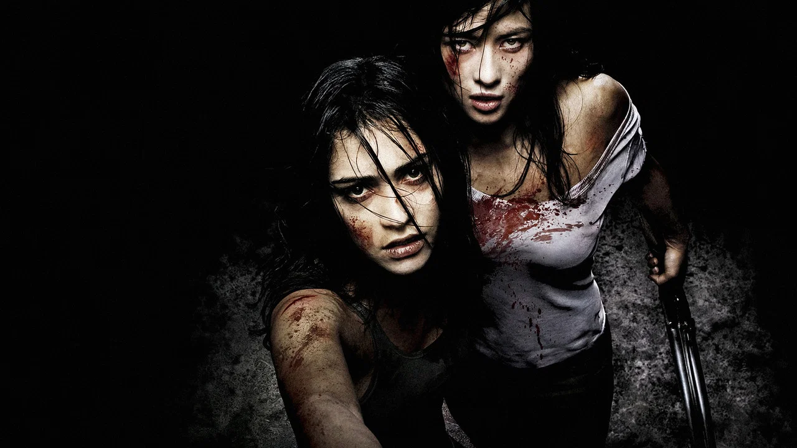
导演与主创 · 他们的历史作品
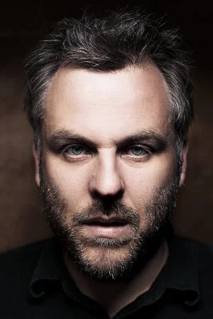
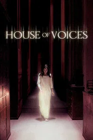
鬼天使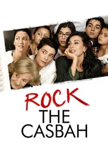
激情卡斯巴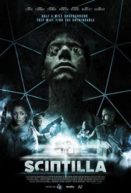
微量超体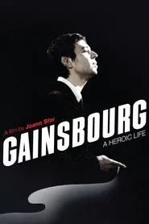
塞尔日·甘斯布：英雄人生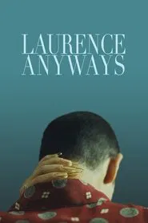
双面劳伦斯短评（轻微剧透）
轻微剧透：全片最安静的一幕在结尾——安娜终于「得见」了彼岸，而镜头只是停在她平静的脸上，旁白把所有理论一次性说尽。轻微剧透：劳吉尔最狠的一笔，是把恐怖片的最后一个镜头给了一个「成功」：她没有死，她完成了转化，而观众和片中那些围观的学者一样，成了共谋。这不是一部用来「看」的电影，是一次关于「观看暴力」的测试。
为什么值得一看
只想给能看完《仲夏夜惊魂》《肌肤之色》这类片的观众；对血腥、儿童虐待暗示、极端精神压迫零容忍的人请直接跳过。内地未映。看完想继续：《噩梦娃娃屋》（同导演，温和得多的版本）、《鬼天使》（同导演前作）、《肌肤之旅》（同类的法国极端恐怖）。
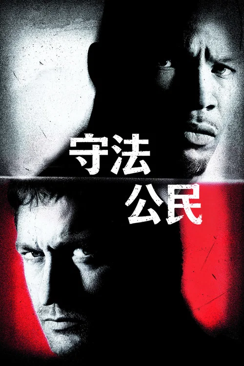
守法公民 Law Abiding Citizen
「“我不是要逃——我是要你们认账。”」
剧情梗概
克莱德·谢尔顿的妻女在自己家里被两个闯入者杀害，他本人在隔壁被打得半死。十年后，案件重新浮出水面：当年为了让其中一个人开口，检察官尼克·赖斯与凶手做了一笔交易——重罪轻判，几年后就能出来。克莱德等这一天等了十年，也准备了十年：他从死囚牢里向外布局，把经手这起案件的每一个人——律师、法官、地方检察官——按他们自己犯的罪一个个处刑。整座费城的司法系统，第一次发现被告席上坐着的才是掌权的人。
亮点
- F·加里·格雷执导——本片之后他才交出了《冲出康普顿》《速度与激情8》这样的商业巨制。
- 本期口碑落差最大的一部：豆瓣 8.0 / IMDb 7.4，而烂番茄仅 26% / Metacritic 34——影评人恨它「鼓吹私刑」，观众爱它「说到做到」。
- 杰拉德·巴特勒演的克莱德几乎没有「动作戏」：他的武器是脑子、时间与对体制的了解——一个从头到尾坐在牢房里指挥一切的复仇者。
- 杰米·福克斯演的尼克·赖斯是全片唯一还在按规则出牌的人，而规则恰恰是克莱德要审判的对象。
- 影片的时钟叙事极其精密：每一次处刑都对应一次司法程序的疏漏——它把「程序正义」的漏洞拍成了凶案现场。
- 结局的双重反转（克莱德到底想要什么、以及那件「礼物」）是近十年犯罪惊悚片里被讨论最多的结尾之一。
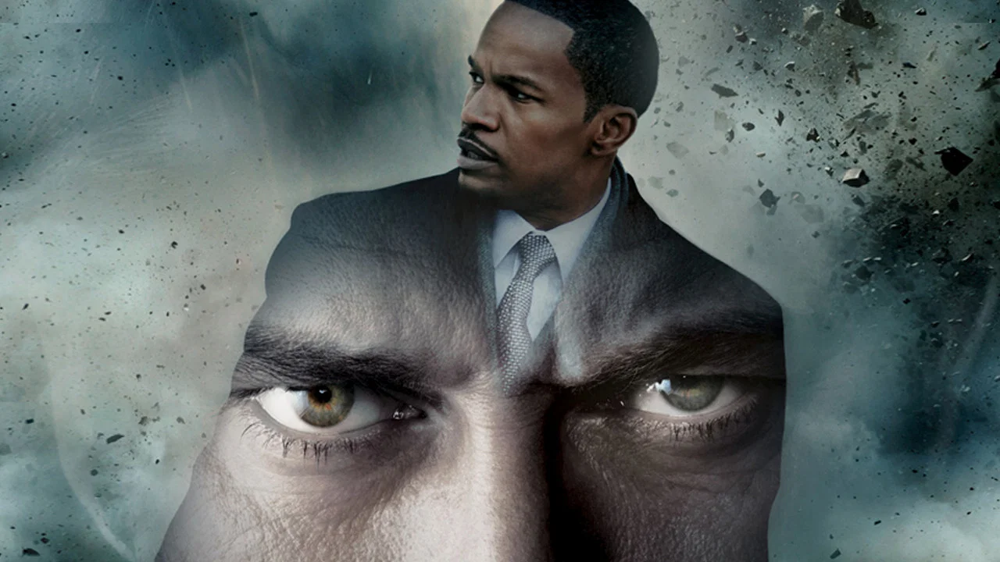
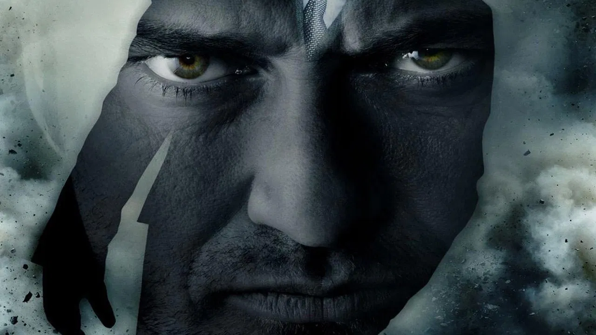
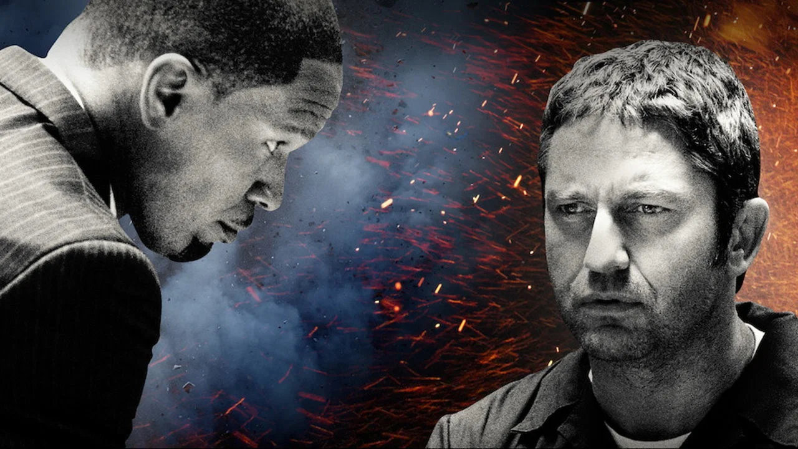
导演与主创 · 他们的历史作品
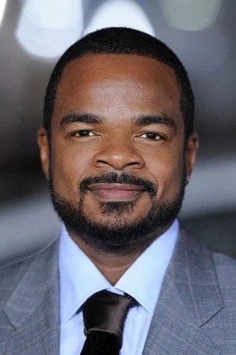
 速度与激情8
速度与激情8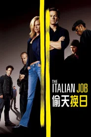
偷天换日 黑衣人：全球通缉
黑衣人：全球通缉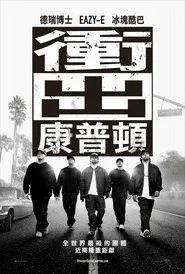
冲出康普顿
 被解救的姜戈
被解救的姜戈 心灵奇旅
心灵奇旅 超凡蜘蛛侠2
超凡蜘蛛侠2 蜘蛛侠：英雄无归
蜘蛛侠：英雄无归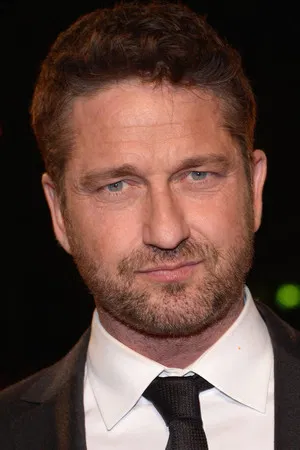
 斯巴达300勇士
斯巴达300勇士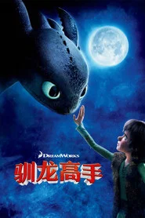
驯龙高手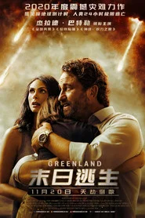
末日逃生短评（轻微剧透）
轻微剧透：全片最狠的一场戏是达比之死——这个当年只判了几年的人，被以「合法的仪式」慢慢拆解，而镜头冷静得像在拍刑具说明书。轻微剧透：影片真正的提问不是「该不该复仇」，而是「当制度亲手教会一个人复仇的成本有多低时，它还有什么资格要求他守法」。克莱德最后求死，是因为他早就把自己算进了那笔账里——这是本片与所有「爽文复仇」的区别。
为什么值得一看
想看「犯罪惊悚片能把节奏压得多紧」的人；能接受极端暴力、私刑主题、以及它价值观上刻意让人不适的观众。R 级，建议成年观看。内地未映，流媒体可看。看完想继续：《守法公民》导演剪辑版（多九分钟，结局更冷）、《大卫·戈尔的一生》（往期第 43 期推荐过的「用自己献祭」版）、《换子疑云》（往期第 43 期推荐过的另一种控诉）。
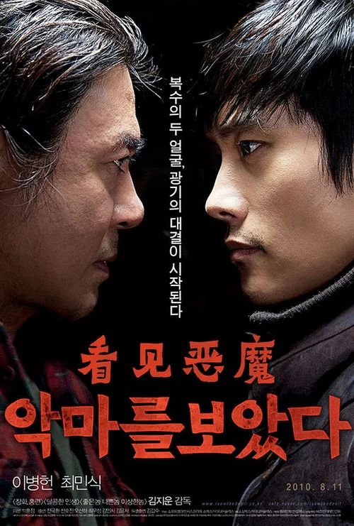
看见恶魔 I Saw the Devil
「“他每次抓到那个畜生，都选择再放他走一次。”」
剧情梗概
国家情报院特工金秀贤的未婚妻张珠妍被残杀在车里，尸体被分块。凶手张景哲是个专门袭击女性的连环杀手，被抓时身上还带着受害者的戒指。秀贤没有把他交给警察——他把人劫走，然后开始了一场只有两个人知道的游戏：抓到、打一顿、放走；再抓到、再打、再放。每一次，他都让这个畜生多活几天，也多知道一点自己招惹了谁。这不是狩猎，这是一场把「恐惧」原样奉还的慢刑。
亮点
- 金知云执导、编剧——往期第 19 期《蔷花，红莲》的导演正是他，本片是他最商业也最残酷的一次转向。
- 韩国首部拿到「限制上映」评级的商业片：影院售票时核验年龄，未成年人一律不得入场。
- 成本仅 600 万美元，全球约 1297 万美元；烂番茄 83% / Metacritic 67——本期专业评价最好的复仇片。
- 李炳宪演的秀贤比杀手更像杀手：他跟踪、埋伏、拷问，一样不落——影片让观众全程站在一个「正在变成怪物的人」这边。
- 崔岷植演的张景哲是全片最让人不适的存在：他会向受害者家属道谢，会在杀人前问路，会把恶当日常。
- 影片的暴力是「疼」而不是「爽」：骨头、牙齿、血，全都实打实——它不给复仇任何快感。
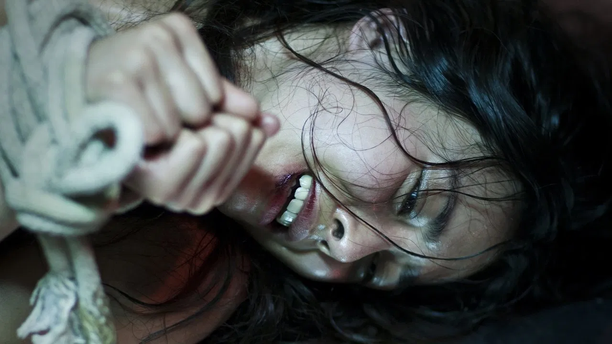
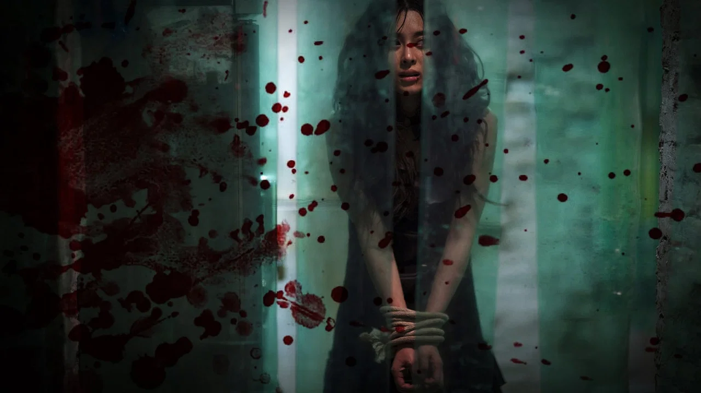
导演与主创 · 他们的历史作品

 背水一战
背水一战 甜蜜的人生
甜蜜的人生 好家伙、坏家伙、怪家伙
好家伙、坏家伙、怪家伙 特种部队Ⅰ：眼镜蛇的崛起豪勇七蛟龙
特种部队Ⅰ：眼镜蛇的崛起豪勇七蛟龙 无可奈何甜蜜的人生
老男孩超体
无可奈何甜蜜的人生
老男孩超体 亲切的金子破墓
亲切的金子破墓短评（轻微剧透）
轻微剧透：全片最绝望的一场戏是秀贤找到张景哲的家人——他已经在举起刀了，才发现门里住着的是凶手的父母和年幼的儿子。轻微剧透：金知云最狠的一笔，是让这场复仇没有「完成」的时刻：秀贤每放走对方一次，自己就离「人」远一步。结尾两家人在一间屋里听见彼此的哭声，没有赢家，只有两个被同一桩罪毁掉的家庭——而秀贤终于明白，他报复的方式，正是他憎恨的方式。
为什么值得一看
想看「复仇片能被拍得多不舒服」的人；能接受极端暴力、性犯罪题材、以及它本质上是一部关于「代价」而非「正义」的电影的观众。限制上映级，仅建议成年观看。内地未映。看完想继续：《看见恶魔》国际版（短两分钟，节奏不同）、《老男孩》（往期第 36 期推荐过的另一种复仇）、《甜蜜的人生》（同导演，冷到底的黑帮悲剧）。
天注定 A Touch of Sin
「“尊严不是别人给的，是抢回来的。”」
剧情梗概
四个互不相识的普通人，四起被逼出来的暴力。山西的大海想为村子讨个说法，告了十几年的状没人理，最后把猎枪扛上了公路；重庆的周三儿过年回家，想的只是让老母亲过个好年，可他只会一样本事——枪；湖北的小玉在按摩院被权贵逼到死角，一刀下去，她先护住的是自己的尊严；广东的小辉在流水线上看不到头，从宿舍楼的窗台走了下去。贾樟柯把四段人生剪在一部片子里——它们共同的名字叫「走投无路」。
亮点
- 贾樟柯执导、编剧，四个故事分别取材于胡文海案、邓玉娇案、周克华案与富士康员工连续坠楼事件。
- 第 66 届戛纳电影节拿下最佳编剧奖，同时入围主竞赛（金狮提名）——华语片在戛纳编剧奖上的零的突破。
- 烂番茄 95% / Metacritic 77：本期海外口碑最好的一部，也是贾樟柯在国际上评价最高的作品之一。
- 姜武演的大海、王宝强演的周三儿、赵涛演的小玉——三个演员都交出了他们职业生涯里最不像自己的表演。
- 影片的暴力全部发生在「日常空间」里：公路、按摩院、候车室——贾樟柯把「底层互害与自毁」拍成了时代切片。
- 本片从未在内地院线公映，只在影展与资料馆渠道流传——这本身也成了它命运的一部分。
导演与主创 · 他们的历史作品

 捉妖记
捉妖记 拆弹专家
拆弹专家 八佰
八佰 唐人街探案
唐人街探案 唐人街探案2
唐人街探案2短评（轻微剧透）
轻微剧透：全片最安静的一场戏是小玉打完人之后离开，在收费站前停下，镜子里她看了一眼自己——那一眼里有恐惧，也有解脱。轻微剧透：贾樟柯最狠的一点，是他不给任何一段故事「正义的结局」：大海死了、周三儿死了、小玉活下来却再无来处、小辉没有声音。四个故事拼起来的不是「恶有恶报」，是一个巨型社会里，普通人手里只剩暴力这一种语言。
为什么值得一看
想看「社会现实题材能被拍得多有力」的人；能接受极度压抑、暴力突然、以及它本质上是一部关于「沉默的大多数」的电影的观众。内地未公映，影展与流媒体偶有资源。看完想继续：《三峡好人》（同导演，往期未推）、《暴裂无声》（往期第 30 期推荐过的同类）、《天注定》四个故事对应的新闻报道。
裁缝 The Dressmaker
「“她把全镇女人的身体都量过——现在，该收账了。”」
剧情梗概
蒂莉·邓纳奇在十岁那年被这座小镇指为杀人犯——同学撞上她后倒地身亡，全镇人都说她推的。她被送去了巴黎，学成一身裁缝手艺；二十年后回到澳洲这座尘土飞扬的小镇，身上只有一台缝纫机和一个名字：当地人叫她「杀人犯」。她没吵也没闹，只是开始给全镇的女人做衣服——从土里土气的镇长夫人到势利眼们，每个人都穿上她做的裙子去参加邻镇的时装赛。然后，在她们集体背叛她的那个晚上，蒂莉把这座小镇每一个人的秘密，当众抖开。
亮点
- 乔斯琳·穆尔豪斯执导、编剧，改编自罗莎莉·哈姆 2000 年的同名小说——她最「类型化」也最锋利的一部。
- 凯特·温斯莱特演蒂莉：一个用布料当武器的复仇者，全片她一次都没提高过音量。
- 朱迪·戴维斯演的「疯妈妈」莫莉是全片的心：一个被小镇毁掉的女人，也是唯一一个从始至终站在女儿这边的人。
- 雨果·维文演的法特拉警长是蒂莉唯一的盟友——一个自己也被小镇边缘化的人，两个人之间的默契是全片最暖的部分。
- 影片的复仇方式是「社会性」的：不流血，靠的是信息、时机与羞耻心——一部真正把「裁缝铺」拍成法庭的电影。
- 烂番茄 57% / Metacritic 47：影评人对它的「小镇寓言」评价两极，而观众明显更吃这一套（豆瓣 7.9）。
导演与主创 · 他们的历史作品

 泰坦尼克号
泰坦尼克号 暖暖内含光
暖暖内含光 阿凡达：水之道
阿凡达：水之道 恋爱假期
恋爱假期
 V字仇杀队
V字仇杀队 黑客帝国
黑客帝国 美国队长
美国队长 黑客帝国2：重装上阵
黑客帝国2：重装上阵短评（轻微剧透）
轻微剧透：全片最痛快的一场戏是时装赛之后的那场公开处刑——蒂莉把每个人的秘密一件件抖出来，镜头在那些穿着她做的裙子的女人脸上移动，裙子越美，人越难看。轻微剧透：穆尔豪斯最妙的一笔，是让蒂莉最后放过了莫莉：她可以烧掉整座小镇的记忆，但放过了唯一无辜的人。结尾她踏上火车，这座小镇从此只剩一堆互相提防的熟人——复仇完成的方式，是让她从此不必再回来。
为什么值得一看
想看「复仇片能有多少种解法」的人；能接受节奏明快、人物全员刻薄、以及它本质上是一部「时尚 + 复仇 + 母女情」的混搭电影的观众。内地未映，流媒体可看。看完想继续：《裁缝》原著小说、乔斯琳·穆尔豪斯的《恋爱编织梦》、凯特·温斯莱特的《大卫·戈尔的一生》（往期第 43 期推荐过，她在里面是另一种狠法）。